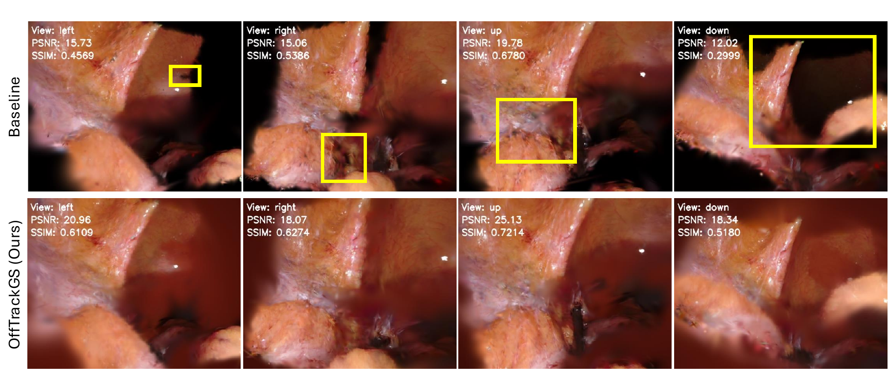

Free-Viewpoint 4D Gaussian Splatting for Dynamic Surgical Scene Reconstruction
Mentor: Prof. Bruce L. Daniel
- Developed OffTrackGS, a 4D Gaussian Splatting framework for reconstructing dynamic surgical scenes from endoscopic video and rendering novel views beyond the recorded camera trajectory.
- Designed Geometry-Constrained Sideview Regularization and introduced Round-Trip View Consistency for ground-truth-free evaluation at unobserved viewpoints.
- Achieved more complete and visually coherent side-view reconstructions, with statistically significant improvements across a range of viewing-angle offsets.